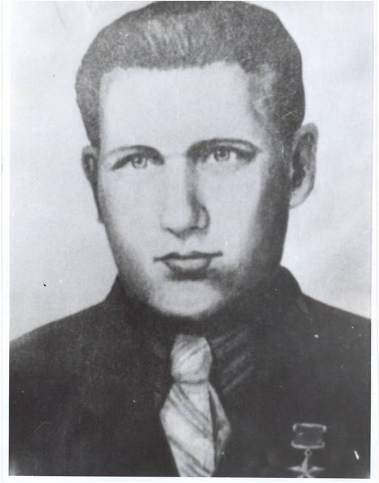

Большаков Сергей Петрович
(03.12.1918 – 04.06.1960)
Герой Советского Союза. Родился в д. Долматово Шонгско-Николаевской волости, впоследствии Емельяновского сельсовета Кичменгско-Городецкого района. Окончил Шатеневскую начальную школу, кооперативно-торговую школу ученичества в г. Никольске и кооперативный техникум в г. Великий Устюг. Трудовую деятельность начал в 1934 году бухгалтером райпотребсоюза в с.Кичменгский Городок.
В ноябре 1939 года был призван в армию. Окончил полковую школу в мае 1940 года в звании сержанта. Великую Отечественную войну начал командиром противотанкового орудия. Как способный командир, был направлен на учебу в артиллерийское училище. После его окончания воевал командиром взвода, батареи, батальона. В 1944 году на счету батареи, которой он командовал, значилось 17 уничтоженных танков и более 450 солдат и офицеров. В книге «Через Карпаты» маршал Советского Союза А.А. Гречко пишет: «При отражении вражеских контратак в районе Струменя отличился командир 426-го истребительно-противотанкового артиллерийского полка старший лейтенант С.П.Большаков. 13 февраля 1945 его батарея отразила две контратаки противника, уничтожила два танка и до роты солдат. В течение следующего дня противник предпринял шесть яростных атак при поддержке трех танков и двух самоходных орудий «Фердинанд» и вклинился в расположение огневых позиций. Батарея огнем уничтожила три тяжелых танка, а когда орудия были выведены из строя, Большаков повел подчиненных в атаку и огнем из всех видов оружия истребил свыше 120 вражеских солдат.»
За бои в феврале 1945 года Указом Президиума Верховного Совета СССР от 24 марта 1945 года С.П.Большакову было присвоено звание «Героя Советского Союза». Награжден: орденами Красного Знамени, Александра Невского, Отечественной войны 2-й степени, Красной Звезды и медалями.
Был шесть раз ранен и дважды контужен. С войны вернулся в звании капитана. Немного поработав снова в торговле, был направлен на Украину в г. Владимир - Волынский, а потом в г. Николаев. Работал директором горпромторга. Окончил технический ВУЗ. Умер в возрасте 42-х лет. В Кичменгском Городке одна из улиц носит его имя, а в сквере Воинской Славы кичменжан установлен его бюст.
В ноябре 1939 года был призван в армию. Окончил полковую школу в мае 1940 года в звании сержанта. Великую Отечественную войну начал командиром противотанкового орудия. Как способный командир, был направлен на учебу в артиллерийское училище. После его окончания воевал командиром взвода, батареи, батальона. В 1944 году на счету батареи, которой он командовал, значилось 17 уничтоженных танков и более 450 солдат и офицеров. В книге «Через Карпаты» маршал Советского Союза А.А. Гречко пишет: «При отражении вражеских контратак в районе Струменя отличился командир 426-го истребительно-противотанкового артиллерийского полка старший лейтенант С.П.Большаков. 13 февраля 1945 его батарея отразила две контратаки противника, уничтожила два танка и до роты солдат. В течение следующего дня противник предпринял шесть яростных атак при поддержке трех танков и двух самоходных орудий «Фердинанд» и вклинился в расположение огневых позиций. Батарея огнем уничтожила три тяжелых танка, а когда орудия были выведены из строя, Большаков повел подчиненных в атаку и огнем из всех видов оружия истребил свыше 120 вражеских солдат.»
За бои в феврале 1945 года Указом Президиума Верховного Совета СССР от 24 марта 1945 года С.П.Большакову было присвоено звание «Героя Советского Союза». Награжден: орденами Красного Знамени, Александра Невского, Отечественной войны 2-й степени, Красной Звезды и медалями.
Был шесть раз ранен и дважды контужен. С войны вернулся в звании капитана. Немного поработав снова в торговле, был направлен на Украину в г. Владимир - Волынский, а потом в г. Николаев. Работал директором горпромторга. Окончил технический ВУЗ. Умер в возрасте 42-х лет. В Кичменгском Городке одна из улиц носит его имя, а в сквере Воинской Славы кичменжан установлен его бюст.